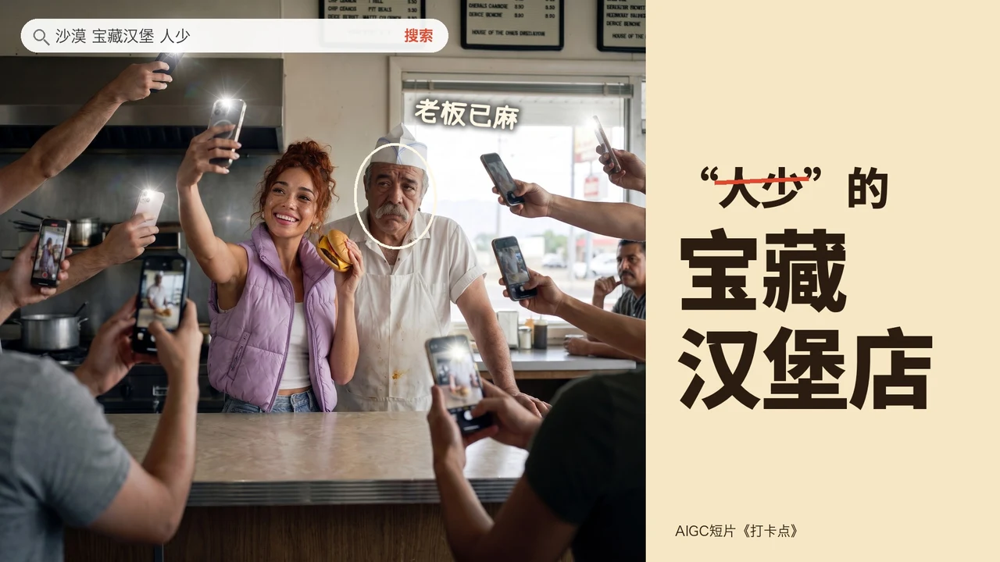

PIN
打卡点

关于影片
照片里，是天空之镜；照片外，是超市停车场的水坑。
Kayla 追遍全网“宝藏打卡地”：沙漠汉堡店、鲸鱼日出、珠峰闸机、数据中心机房……直到全网断电，照片发不出去。
每个画面均由 AI 制作。创作者 Dylan He。
下一部作品被造者

照片里，是天空之镜；照片外，是超市停车场的水坑。
Kayla 追遍全网“宝藏打卡地”：沙漠汉堡店、鲸鱼日出、珠峰闸机、数据中心机房……直到全网断电，照片发不出去。
每个画面均由 AI 制作。创作者 Dylan He。